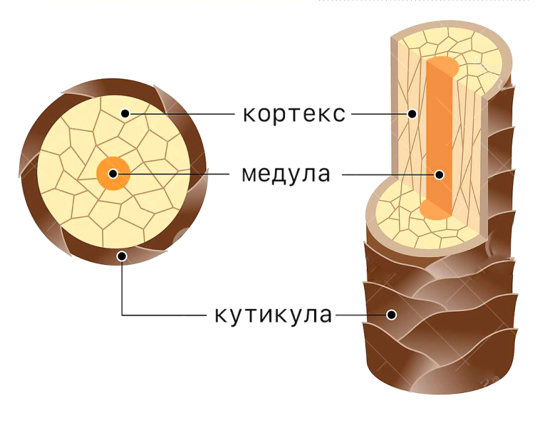

Структура волос.
Волосы человека состоят из видимой части, надкожной, с которой собственно и работает парикмахер, её так же называют стержнем. И части, находящейся под кожей, корня волос или фолликула.
Стержень волоса состоит из трех слоёв:
- Кутикула — внешний, защитный, самый прочный слой волоса. Это 6-10 слоёв перекрывающих друг друга на подобие черепицы чешуек, состоящих из Кератина. Он защищает волос от механических и других видов возлействий. Этот слой абсолютно прозрачный.
- Кортекс — За кутикуллой идёт кортекс. Это средний слой волоса, дающий ему прочность и эластичность. Так же он, за счёт меланина, определяет цвет.
- Медула (мозговое вещество) — центральная часть стержня, содержит пустоты, за счёт чего волосы обладают теплоизолируюшим свойством, так же по мнению некоторых учёных, он участвует в передаче питательных веществ. Другие, считают, что основная его функция увеличение объёма волос.

Корень(фолликула) расположен глубоко в коже, состоит в том числе из:
- Bолосяная луковица — из нее происходит рост волос.
- Cальная железа — раcположена рядом с луковицей и выделяет кожное сало, смазывая волос
Здоровье волос, как внешней её части, так и внутренней(корней), зависит от многих факторов. Курения, алкоголя, наследственности, состояния желудочно кишечного тракта, от обшего состояния организма.
А также от правильного ухода за ними.